Sukar Duş Kanalı & Drenaj Altyapı
Sukar 304 Paslanmaz Izgara
•
Sulu / Susuz Koku Klapesi
•
Sessiz PVC Boru & Ek Parça
Drenaj & Tesisat Teklifi Al

Visam Gömme Rezervuar & Altyapı
TEOS & ASSOS 3/6L
•
8 cm İnce Gövde
•
Sessiz Dolum Flotörü
Rezervuar & İç Takım Fiyatı Al

Sukar Duş Kanalı & Armatür
Sukar SB.5200 304 Çelik
•
GPD MTB120 Kuğu 4.500 ₺
•
ALZ Banyo Donanımları
Armatür & Banyo Kataloğunu İncele
Tesisat & Banyo Departmanları
İncelemek istediğiniz tesisat grubunu seçin
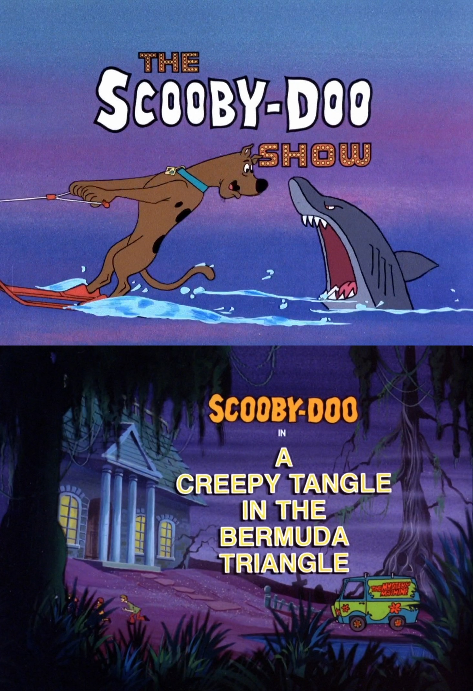
Sukar Rain Shower Set (SB.5200-01 Deluxe Paslanmaz Duş Kanalı)
........................................
Sukar SB.5200-01 Deluxe
Modern duşakabinlerde hemzemin duş drenajı için sulu ve susuz koku önleyici çift bariyerli, 360 derece dönebilen S tipi çıkış gövdeli Sukar Deluxe duş kanalı.
SB.5200-01 Deluxe Seri•Sulu & Susuz Koku Klapesi•304 Kalite Paslanmaz Çelik
Teknik Detay
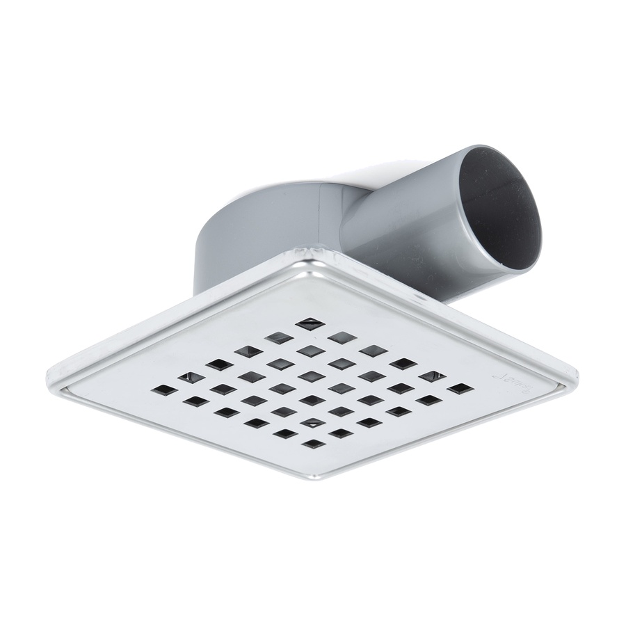
Sukar Paslanmaz Izgaralı Koku Önleyici Çekvalfli Yer Sifonu
........................................
Sukar Paslanmaz Sifon
Banyo, balkon, çamaşır odası ve teras zeminlerinde su taşkınlarını önleyen, koku ve böcek girişini kapatan paslanmaz çelik çerçeveli Sukar yer sifonu.
Paslanmaz 304 Izgara•Çekvalfli Koku Kapanı•Ø50 / Ø70 Çıkış
Teknik Detay
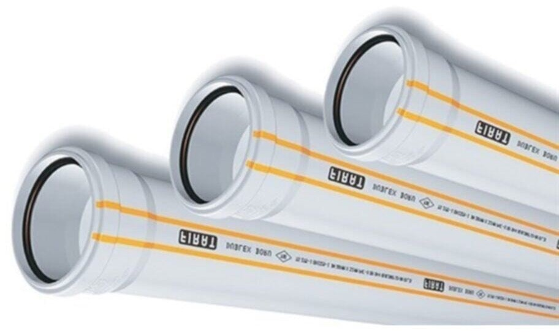
PVC Sessiz Atık Su & Pis Su Gider Borusu
........................................
PVC Atık Su Borusu
Tuvalet, banyo, mutfak ve lavabo atık sularının ana kanalizasyona sessizce iletilmesini sağlayan contalı PVC atık su boruları.
Elastomerik Conta Contalı•Pürüzsüz Akış Kanalı•Ø50 – Ø150 mm Çaplar
Teknik Detay
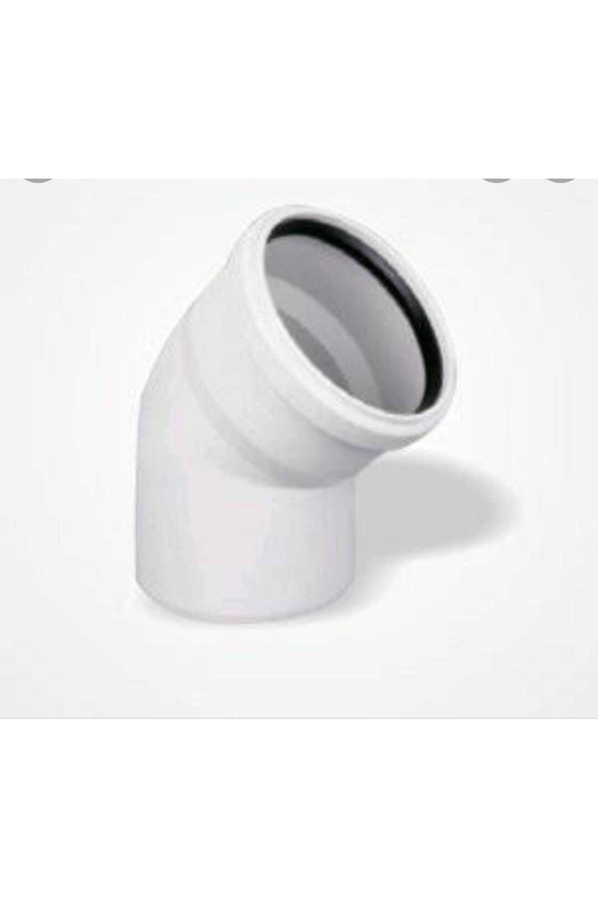
PVC Atık Su Dirsek (45°/87°), Tek Çatal & Redüksiyon Grubu
........................................
PVC Ek Parça Grubu
Gider hatlarının dönüş, birleşme ve çap değişim noktalarında tıkanmaları önleyen hidrodinamik eğimli PVC ek parçaları.
45° & 87° Dirsekler•Tek Çatal & Çift Çatal•Geniş Redüksiyon Çeşitleri
Teknik Detay
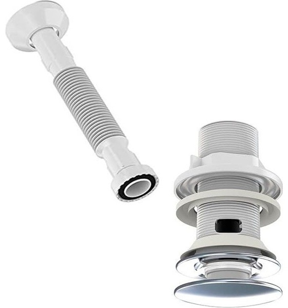
Universal Körüklü Esnek Lavabo & Evye Sifonu (Krom Taslı)
........................................
Esnek Körüklü Sifon
TSA Tekinler, Şimşek (AC-002), DMR, Damlasu ve Akyüz marka pirinç vidalı krom taslı, bükülebilir koku kıvrımlı universal lavabo tahliye sifonu.
Krom Paslanmaz Süzgeç•Bükülebilir Körük Boru•1 1/4" - 1 1/2" Adaptör
Teknik Detay
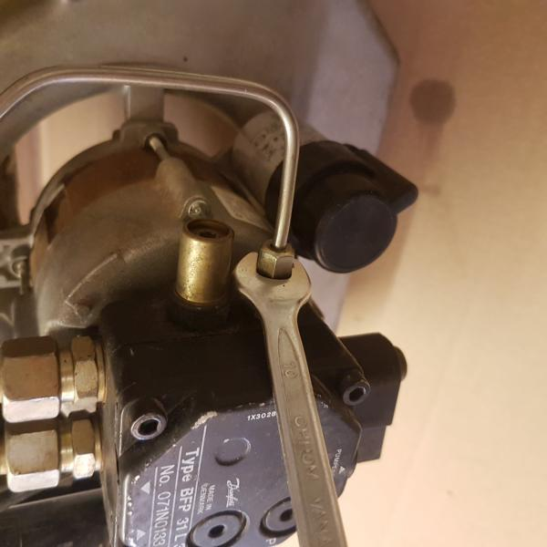
GPD MTB120 Kuğu Borulu Mutfak Evye Bataryası
........................................
GPD MTB120 · 4.500 ₺
GPD armatür güvencesiyle 360 derece döner yüksek kuğu borulu, kireç kırıcılı özel perlatörlü, sessiz su tasarruflu 35 mm seramik kartuşlu lüks mutfak evye bataryası.
Raf Fiyatı: 4.500 ₺•360° Döner Kuğu Gövde•35 mm Seramik Kartuş
Teknik Detay
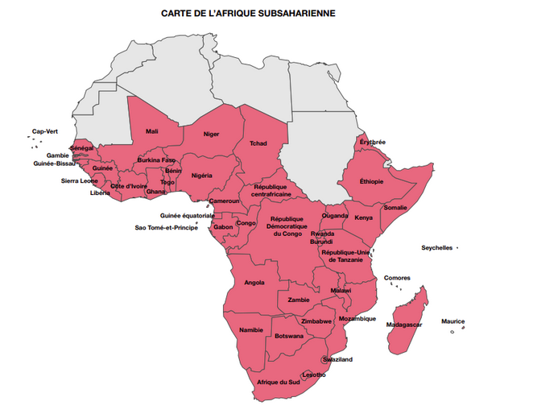
İtimat Pirinç Gövde Mix Banyo & Lavabo Batarya Serisi
........................................
İtimat Mix Batarya
Yerli tesisatın köklü markası İtimat güvencesiyle masif pirinç döküm gövdeli, çizilmeye dayanıklı krom kaplamalı banyo ve lavabo mikser bataryaları.
Ağır Tip Pirinç Döküm•40 mm Kartuş•Krom Parlak Yüzey
Teknik Detay
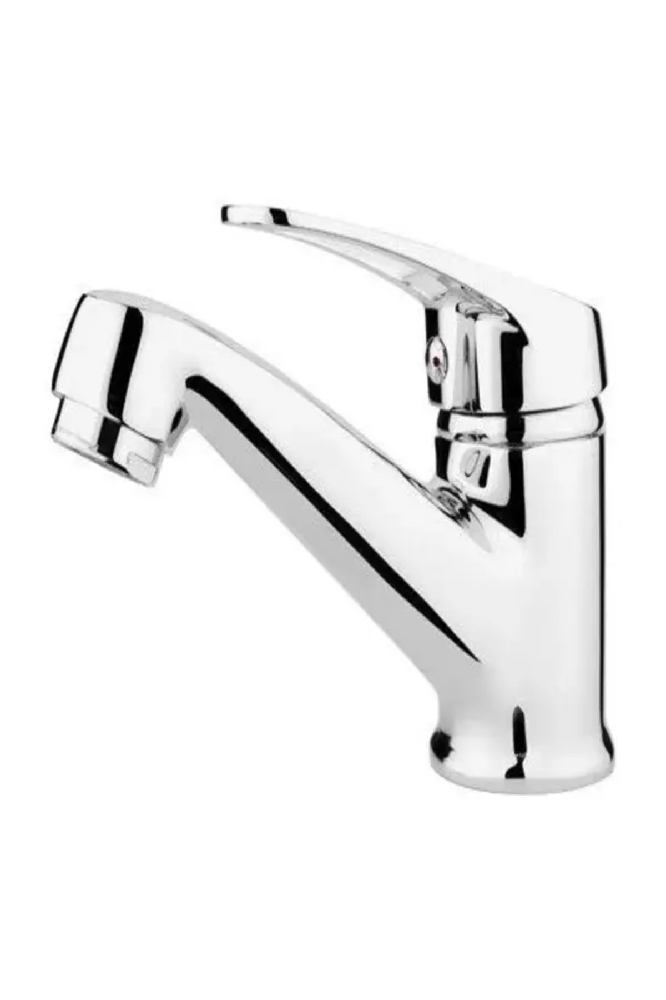
Arteca Krom Aç-Kapa Lavabo ve Eviye Bataryası
........................................
Arteca Lüks Mix
Zarif tasarımı, ergonomik kumanda kolu ve yumuşak açma-kapama sağlayan seramik kartuşu ile Arteca lavabo ve mutfak armatürleri.
Ergonomik Kumanda Kolu•Sessiz Akış•35 mm Seramik Disk
Teknik Detay
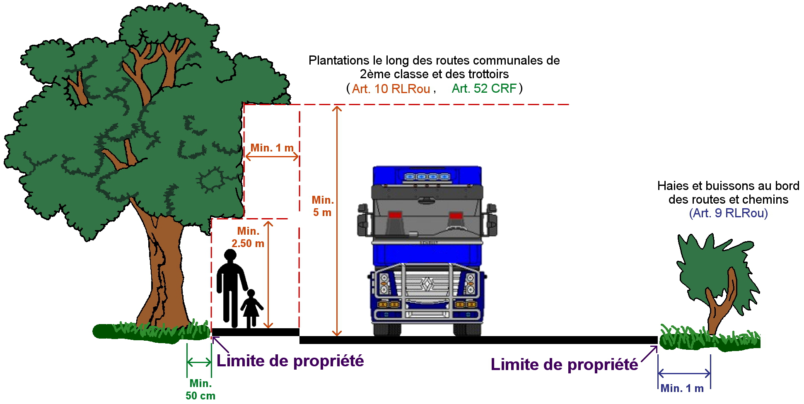
Aces & Hemera & Şahinler Krom Sürgülü Duş Başlığı Seti
........................................
Sürgülü Duş Seti
Paslanmaz çelik sürgü borusu, 150 cm çift kenetli patlamaz spiral hortumu, silikon kireç temizleme uçlu 3 fonksiyonlu duş elciği içeren komple duş takımı.
Paslanmaz Çelik Boru•150 cm Çift Kenetli Hortum•Kireç Temizlemeli Elcik
Teknik Detay
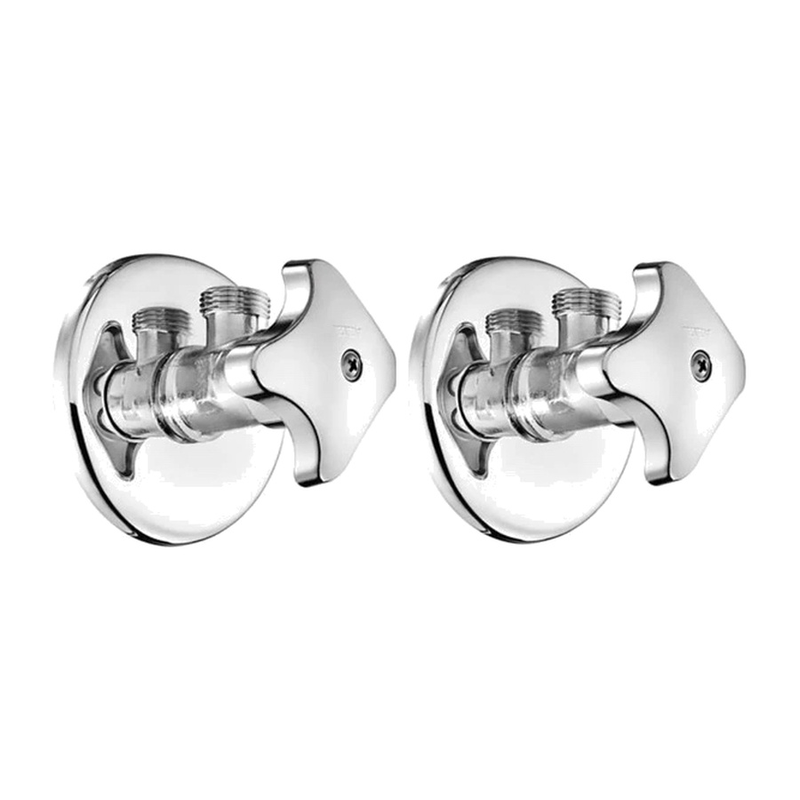
TSA Tekinler & Aces Filtreli Seramik Kartuşlu Taharet Musluğu
........................................
Krom Taharet Musluğu
Klozet ve lavabo altlarında kullanılan, geleneksel contalı musluklar gibi damlatma yapmayan, çeyrek tur çevirmeli paslanmaz pirinç taharet musluğu.
1/4 Tur Çeyrek Aç-Kapa•Pirinç Rozetli•Filtreli & Standart Seçenek
Teknik Detay
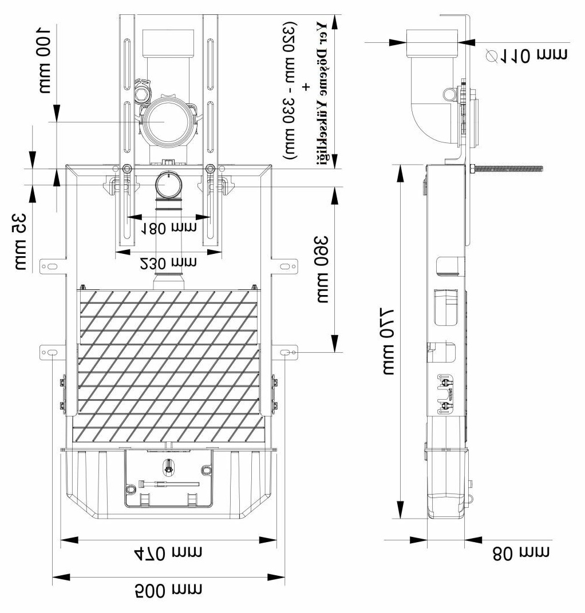
Visam TEOS 3/6L Çift Kademeli Gömme Rezervuar (Tuğla / Alçıpan)
........................................
Visam TEOS · 3/6L
8 cm ultra ince gövdesiyle banyolarda yer kazandıran, strafor terleme izolasyonlu, sessiz doldurma mekanizmalı ve çift kademeli Visam TEOS gömme rezervuar.
Visam TEOS Serisi•3/6 L Su Tasarrufu•8 cm İnce Gövde
Teknik Detay
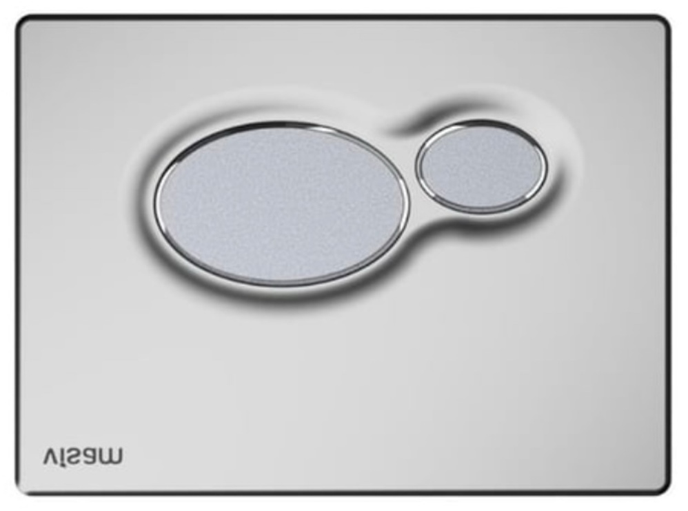
Visam ASSOS Çift Butonlu Mekanik Kumanda Paneli
........................................
Visam ASSOS Panel
Visam TEOS gömme rezervuar sistemleriyle tam uyumlu, 3 litre küçük ve 6 litre tam yıkama butonlarına sahip modern minimalist kumanda paneli.
Mat Krom / Parlak Krom / Beyaz•Hafif Mekanik Basma Hissi•Kolay Geçmeli Montaj
Teknik Detay
Visam Duvardan Asma Polipropilen Plastik Rezervuar
........................................
Visam Asma · 1.250 ₺
Alaturka tuvaletler ve klasik yer tipi klozetler için UV dayanımlı sararmayan beyaz polipropilen gövdeli, iç takımı ve borusu dahil Visam asma rezervuar.
Raf Fiyatı: 1.250 ₺•Sararmaz Polipropilen•Komple İç Takım & Boru Dahil
Teknik Detay
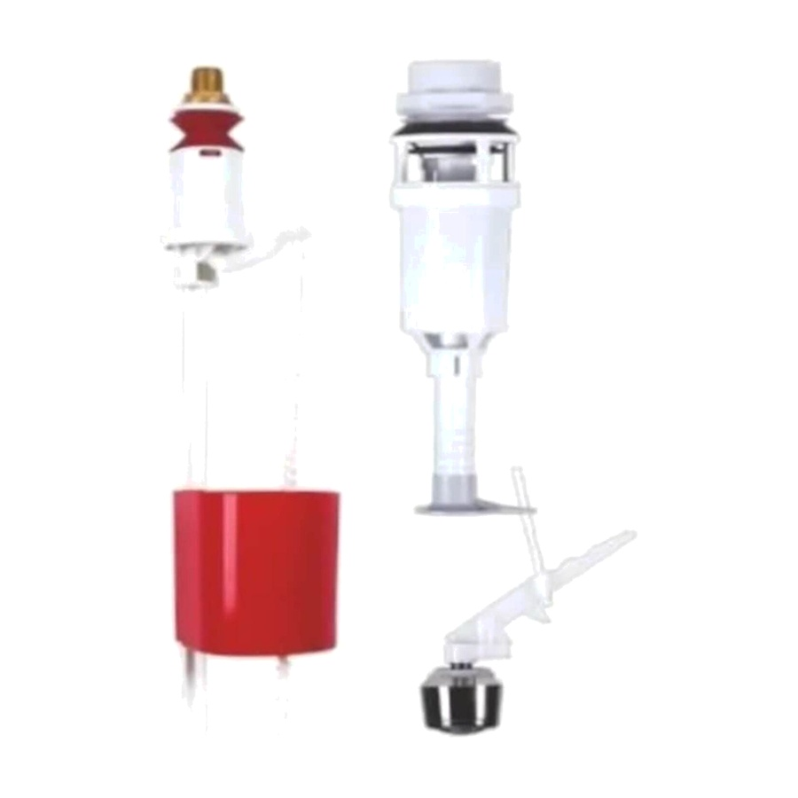
Visam LEYLAK, İRİS & MİMOZA Klozet İç Takımları & Flotörler
........................................
Visam İç Takım Grubu
Tüm yerli ve ithal seramik klozet rezervuarlarıyla uyumlu, basmalı çift kademeli (Leylak), tek basmalı (İris) ve alttan/yandan sessiz şamandıralı (Mimoza) iç takımlar.
Visam Leylak & İris & Mimoza•Sessiz Dolum Flotörü•Yükseklik Ayarlı Taşma Borusu
Teknik Detay
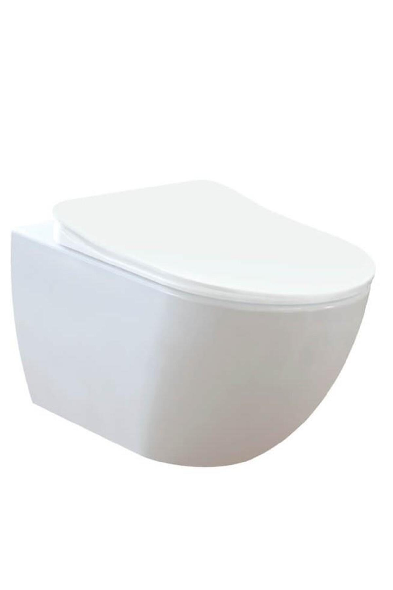
Creavit BT VG1841 Rimless Kanalsız Asma Klozet
........................................
Creavit BT VG1841
Kanal altı kir ve kireç birikimini sıfıra indiren yeni nesil Creavit Rimless kanalsız yıkama mimarisi, pürüzsüz antibakteriyel seramik sır kaplama.
Model: BT VG1841•Kanalsız Hijyenik Yıkama•Gizli Montaj Vidaları
Teknik Detay
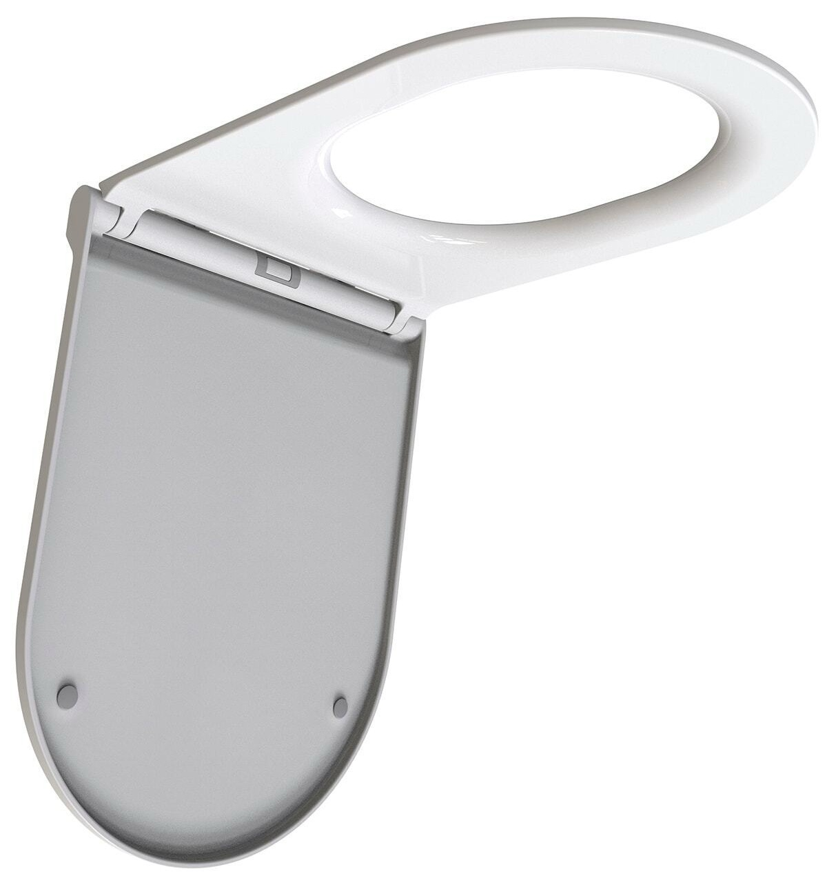
Bien Antibakteriyel Duroplast Yavaş Kapanan (Soft-Close) Klozet Kapağı
........................................
Bien Duroplast Kapak
Paslanmaz çelik üstten sıkmalı menteşeleriyle kolayca sökülüp temizlenebilen (Take-Off), çarpmayı önleyen hidrolik mekanizmalı sert duroplast klozet kapağı.
Sert Çizilmez Duroplast•Amortisörlü Yavaş Kapanma•Üstten Kolay Montaj
Teknik Detay
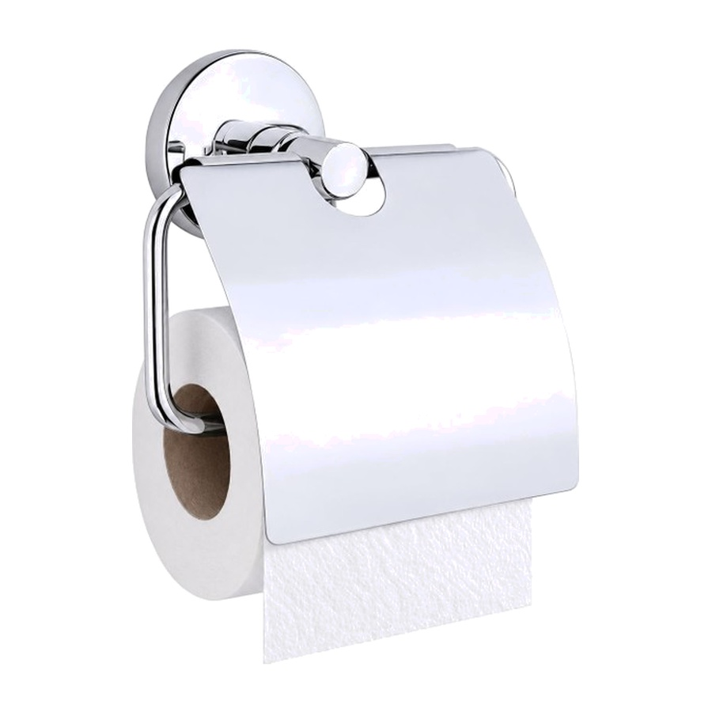
ALZ Banyo Paslanmaz Çelik Kapaklı Tuvalet Kağıtlığı
........................................
ALZ Kağıtlık · 200 ₺
Banyo nemine ve suya dayanıklı masif paslanmaz çelik gövdeli, su sıçramasını önleyen yaylı kapaklı ALZ Banyo krom tuvalet kağıtlığı.
Raf Fiyatı: 200 ₺•Paslanmaz Çelik Gövde•Gizli Vidalı Montaj
Teknik Detay
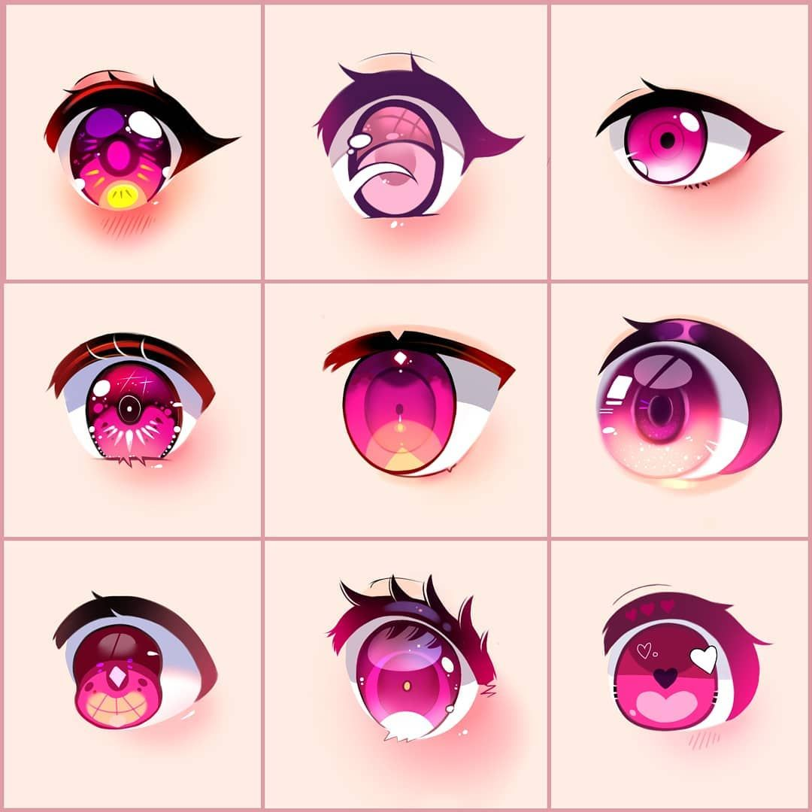
ALZ Banyo Paslanmaz Çelik Düz & Halka Havluluk
........................................
ALZ Havluluk · 300 ₺
El ve banyo havluları için korozyonsuz krom kaplama, gizli vidalı duvara montaj flanşlı sağlam boru gövdeli ALZ banyo havluluk serisi.
Raf Fiyatı: 300 ₺•50 cm Düz Boru / Yuvarlak Halka•Paslanmaz Krom Yüzey
Teknik Detay
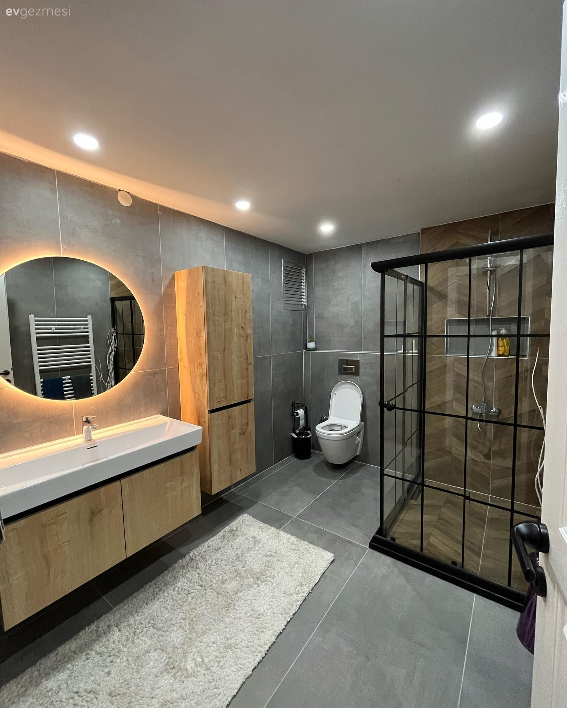
ALZ Banyo Temperli Cam Etajer Raf, Sabunluk & Fırçalık
........................................
ALZ Cam Banyo Etajeri
Ayna altı kozmetik ve kişisel bakım ürünleri için pirinç krom korkuluklu temperli kırılmaz cam raf ve duvara monte sıvı sabunluk donanımları.
Kırılmaz Temperli Cam•Pirinç Krom Korkuluk•Paslanmaz Ayaklar
Teknik Detay

Rulopa Paslanmaz Krom Tel Köşe Banyo Şampuanlığı (2'li & 3'lü)
........................................
Rulopa Tel Şampuanlık
Duşakabin iç köşelerine monte edilen, suyun üzerinde durmayıp kendiliğinden aktığı çift ve üç katlı paslanmaz tel sepetli şampuanlık.
Rulopa Kalite Tel Raf•2 Katlı & 3 Katlı Seçenek•Krom Paslanmaz Kaplama
Teknik Detay
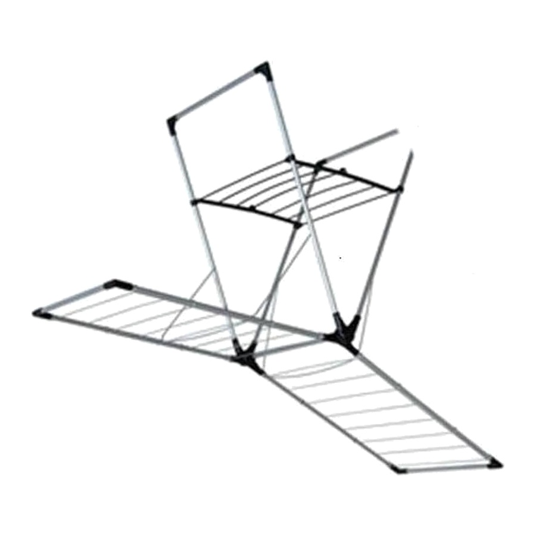
BAY-T MK 1424 Paslanmaz Katlanır Kanatlı Çamaşır Kurutmalığı
........................................
BAY-T MK 1424 · 300 ₺
Balkon ve banyolarda çamaşır kurutma için paslanmaz alüminyum borulu, elektrostatik fırın boyalı, katlandığında yer kaplamayan BAY-T MK 1424 kurutmalık.
Raf Fiyatı: 300 ₺•Model: MK 1424•Katlanabilir Kompakt Gövde
Teknik Detay
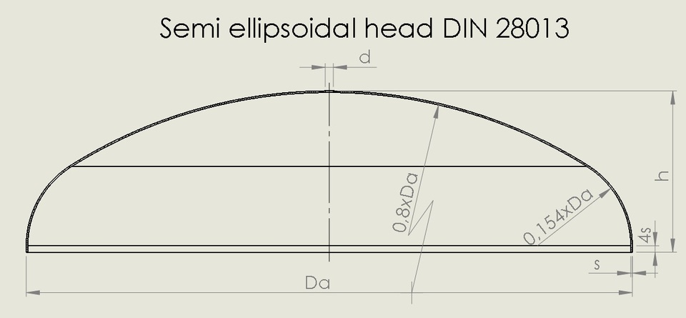
Hanex Titreşim Önleyici Çamaşır Makinesi Kauçuk Ayak Takozu (4'lü)
........................................
Hanex Takoz · 100 ₺
Çamaşır ve kurutma makinelerinin sıkma devrinde çıkardığı gürültüyü, sarsıntıyı ve zeminde yürümesini engelleyen yüksek dansite vakum tabanlı 4'lü kauçuk takoz seti.
Raf Fiyatı: 100 ₺ (4'lü Paket)•Yüksek Dansite Kauçuk•Zemin Çizilmesini Önler
Teknik Detay
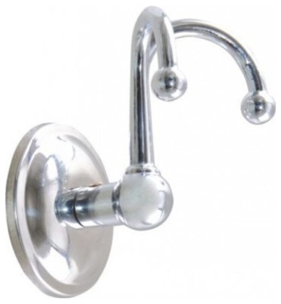
Elal Masif Çiftli Krom Bornozluk & Askılık
........................................
Elal Çiftli Bornozluk
Banyo kapısı arkası veya duş yanı için masif döküm gövdeli, ağır bornoz ve havluları güvenle tutan çiftli krom askılık.
Masif Zamak / Pirinç Döküm•Çift Kancalı Ergonomik Uç•Gizli Vida Flanşı
Teknik Detay
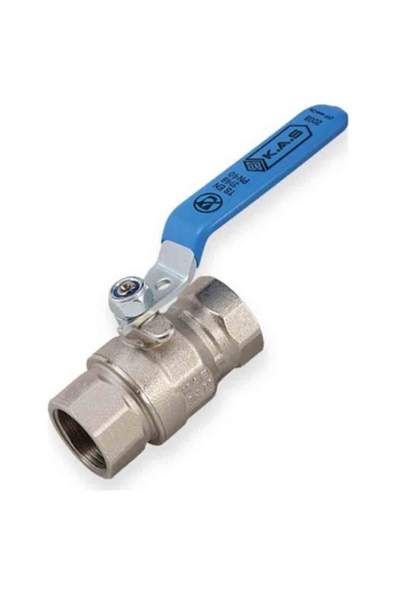
Kas & E.C.A Tam Geçişli Ağır Tip Pirinç Küresel Vana (PN 25)
........................................
Pirinç Küresel Vana
Daire girişi, hidrofor, kollektör ve yangın hatlarında basınç kaybı yaratmayan teflon küre yataklı ağır tip pirinç küresel su vanası.
Tam Geçişli Küre•PN 25 Yüksek Basınç•1/2" – 2" Ölçüler
Teknik Detay
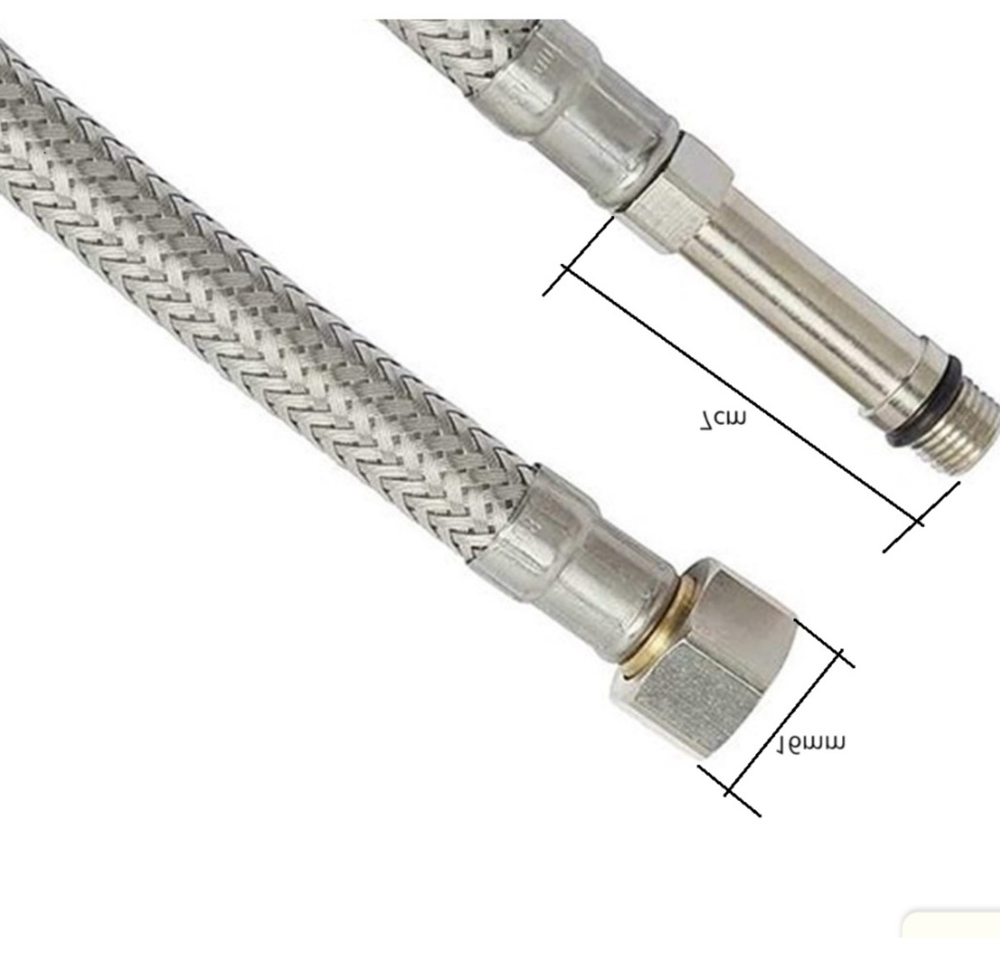
Örgülü Paslanmaz Çelik EPDM Batarya & Klozet Fleks Hortumu
........................................
Paslanmaz Fleks Hortum
Musluk, batarya, şofben ve klozet rezervuarlarına su bağlantısı sağlayan, patlamaya dayanıklı AISI 304 paslanmaz örgülü esnek fleks hortumlar.
EPDM Hijyenik İç Hortum•304 Kalite Çelik Örgü•10 Bar Çalışma Basıncı
Teknik Detay
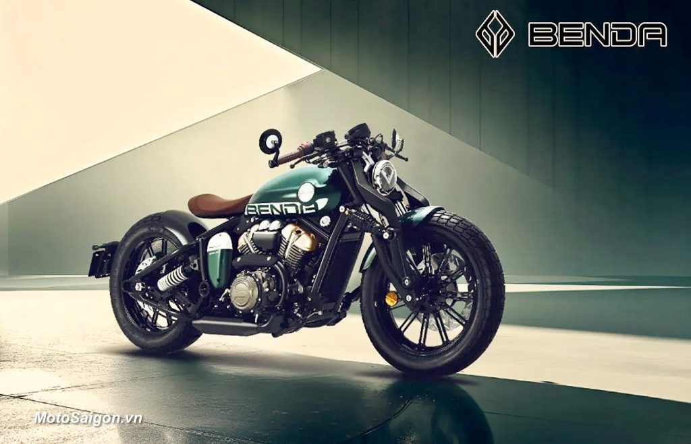
Yaylı Pirinç Çekvalf, Pislik Tutucu Filtre & Su Saati Rekor Takımı
........................................
Tesisat Emniyet Grubu
Sayacın ters dönmesini ve şebeke suyunun kirlenmesini önleyen yaylı pirinç çekvalf, sayaç rekor takımı ve pirinç y tipi pislik tutucu filtreler.
Yaylı Sessiz Çekvalf•Paslanmaz Çelik Filtre Kartuşu•Sayaç Rekor Takımı
Teknik Detay
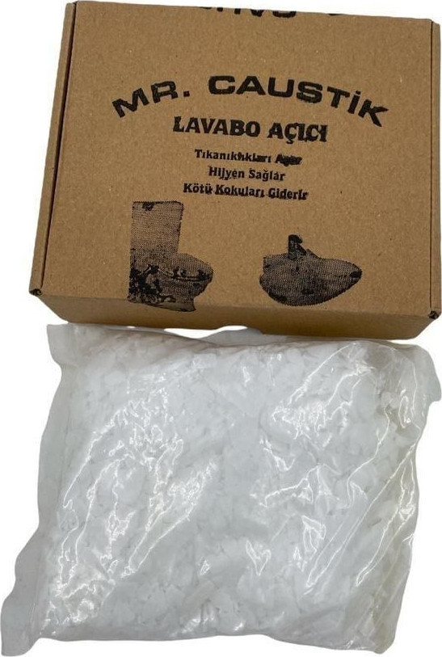
Mr. Caustic Kostik Lavabo ve Tıkalı Gider Açıcı Pul Kostik
........................................
Mr. Caustic · 100 ₺ / 200 ₺
Tıkanmış lavabo, banyo ve tuvalet pimaş borularında biriken yağ, saç, kıl, yemek artığı ve sabun birikintilerini sıcak suyla temasında anında eriten saf pul kostik.
450 g: 100 ₺ / 1000 g: 200 ₺•Sıcak Su Aktivasyonlu•Plastik Borulara Zarar Vermez
Teknik Detay
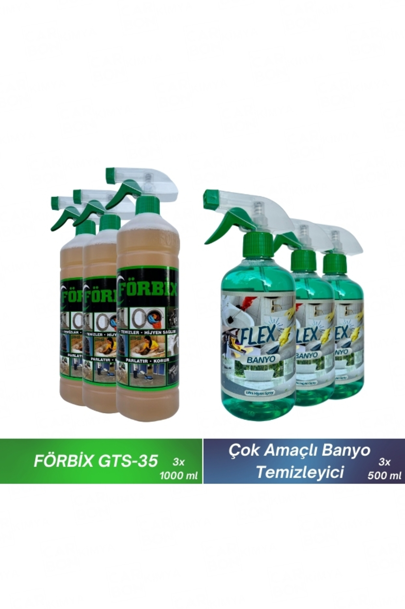
GTS-35 Profesyonel Derz Dolgu, Kireç & Ağır Harç Temizleyici (1000 ml)
........................................
GTS-35 Derz Temizleyici
Banyo seramikleri, fayans araları ve duş zeminlerindeki kararmış derz dolgularını, inşaat sonrası çimento harç kalıntılarını ilk günkü rengine kavuşturan formül.
1000 ml Konsantre Şişe•Harç & Pas Lekesi Çözücü•Derz Kararmalarını Temizler
Teknik Detay
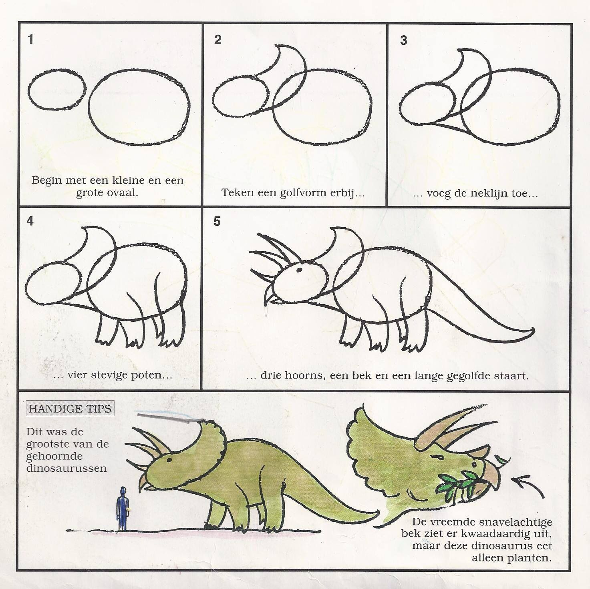
Porçöz Ekstra Güçlü Kireç & Pas Sökücü Formül (1000 ml)
........................................
Porçöz Kireç & Pas
Banyo bataryaları, duş başlıkları, klozet içi ve su tesisatındaki yoğun kireç taşlaşmalarını ve pas birikintilerini saniyeler içinde çözen konsantre formül.
1000 ml Orijinal Şişe•Taşlaşmış Kireci Söker•Lavabo ve Klozet Hijyeni
Teknik Detay
Balçova Yapı Market & Sıhhi Tesisat Merkezi
Sukar duş kanalları, bataryalar, gömme rezervuar yedek parçaları, vitrifiye ve perakende tesisat alışverişi.
Eğitim Mah. Dalya 1 Sk. No:5/A, Balçova / İzmir
Pazartesi – Cumartesi: 08:30 – 19:30
Telefon: 0 (232) 278 43 40
Urla Ana Lojistik Deposu (Toptan Sevkiyat)
Çeşme, Alaçatı, Urla ve Güzelbahçe şantiyelerine toptan PVC atık su boruları, drenaj kanalları ve mekanik altyapı sevkiyatı.
Kalabak Mah. 3004 Sk. No:2, Urla / İzmir
Pazartesi – Cumartesi: 08:00 – 18:30
Şantiye Sevkiyat Hattı: 0 (532) 384 44 97